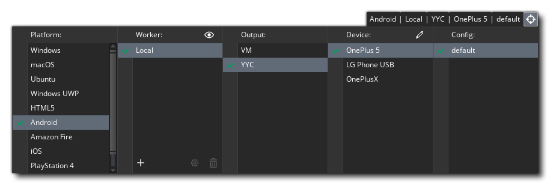
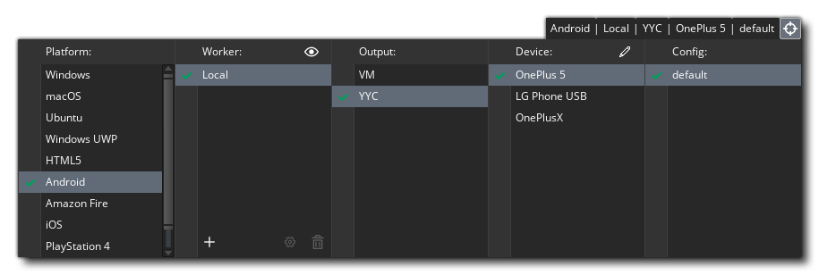

Le gestionnaire de périphériques est accessible en cliquant sur  sur le bouton du crayon dans la liste cible: 
sur le bouton du crayon dans la liste cible: 
Cliquez sur ce bouton pour ouvrir le Gestionnaire de périphériques où vous pouvez configurer différents périphériques pour les plates-formes cibles que vous souhaitez compiler et tester (notez que les plates-formes disponibles dépendent de la Licence que vous possédez et qu'elles ne sont pas toutes visibles). Vous trouverez ci-dessous des détails sur la configuration des périphériques pour chacune des plates-formes cibles:
Ici, vous pouvez cliquer sur le bouton Ajouter un nouveau périphérique pour ajouter manuellement un nouvel appareil Android à la liste ou cliquer sur le bouton Détecter l'appareil pour que GameMaker Studio 2 détecte automatiquement tous les appareils connectés via une connexion filaire. Vous pouvez également configurer un périphérique virtuel Android en cliquant sur le bouton intitulé Exécuter AVD. Cela ouvrira le gestionnaire de périphériques virtuels Android où vous pouvez créer un nouveau AVD (voir ici pour plus d'informations). Une fois que vous en avez créé un, vous devez le lancer depuis le gestionnaire AVD puis, dans GameMaker Studio 2 cliquer sur le bouton Détecter le périphérique et il doit être ajouté automatiquement à la liste des périphériques:
Une fois qu'un périphérique a été ajouté, vous pouvez vérifier la connexion à l'aide du bouton Tester la connexion ou le retirer de la liste en cliquant sur le bouton Supprimer le périphérique.
Le gestionnaire de périphérique HTML5 permet d'ajouter différents navigateurs à la liste des appareils pour le ciblage lors de l'exécution. Vous devez cliquer sur le bouton Ajouter un nouveau navigateur, puis attribuer un nom au périphérique et pointer GameMaker Studio 2 vers le chemin de l'exécutable du navigateur. Vous pouvez également définir le numéro de port (51264 par défaut) en cas de conflit, définissez également le serveur Web autorisé, les noms d'hôte et les plages IP CIDR si nécessaire.
Avant de pouvoir configurer vos appareils iOS, vous devez avoir configuré votre appareil Mac et testé sa connexion (voir ci-dessous pour plus de détails). Une fois cela fait, vous pouvez sélectionner le Mac que vous souhaitez cibler dans le menu déroulant en haut de la fenêtre, puis cliquer sur le bouton Détecter le périphérique pour que GameMaker Studio 2 trouve automatiquement tous les périphériques iOS connectés. Une fois connecté, les détails de l'appareil seront affichés dans la liste dans cette fenêtre.
Pour ajouter un appareil Mac au gestionnaire, vous devez d'abord cliquer sur le bouton Ajouter un nouvel appareil qui ajoutera l'appareil et créer des champs vierges que vous devrez remplir pour activer la connexion. Vous devez d'abord nommer l'appareil pour pouvoir l'identifier dans la liste des cibles, puis indiquer le nom d'hôte (ou l'adresse IP) du Mac. Vous devez ensuite indiquer le nom d'utilisateur de l'utilisateur auquel vous souhaitez créer un lien, ainsi que le mot de passe utilisé. Si vous le souhaitez, vous pouvez également changer le dossier d'installation sur le Mac à l'endroit où vous préférez GameMaker Studio 2 pour stocker les fichiers de construction pour vos projets.
Lorsque tout cela est fait, vous pouvez cliquer sur le bouton Tester la connexion pour vous assurer que GameMaker Studio 2 peut communiquer avec le Mac.
REMARQUE: Si vous développez pour iOS, vous devez d'abord avoir fait cela et avoir établi une connexion de travail avec le Mac que vous souhaitez utiliser pour le développement.REMARQUE: vous devez avoir activé la connexion à distance sur le mac cible. Cela peut être fait en allant dans Préférences -> Partage et Activer la connexion à distance pour l'utilisateur que vous voulez pouvoir vous connecter.
Pour ajouter un périphérique Ubuntu (Linux) au gestionnaire, vous devez d'abord cliquer sur le bouton intitulé Ajouter un nouveau périphérique qui ajoutera le périphérique et créer des champs vides que vous devrez remplir pour activer la connexion. Vous devez d'abord nommer l'appareil pour pouvoir l'identifier dans la liste des cibles, puis indiquer le nom d'hôte (ou l'adresse IP) de l'ordinateur Ubuntu (ou machine virtuelle). Vous devez ensuite indiquer le nom d'utilisateur de l'utilisateur auquel vous souhaitez créer un lien, ainsi que le mot de passe utilisé. Vous devez également fournir un dossier sur la machine Ubuntu que vous souhaitez utiliser pour installer vos projets. et quand tout cela est fait, vous pouvez cliquer sur le bouton Tester la connexion pour vous assurer que GameMaker Studio 2 peut communiquer avec la machine Ubuntu.
Avant de pouvoir ajouter un périphérique pour la cible UWP Windows 10, vous devez avoir configuré le portail de périphériques sur le périphérique. Si vous ne le faites pas, GameMaker Studio 2 ne pourra pas communiquer avec l'appareil ni créer correctement vos applications UWP.
Le moyen le plus simple d'activer le mode développeur est de simplement taper " Developer Mode " dans Windows Search, puis de cliquer sur l'entrée " Settings " qui s'affichera. Cela va ouvrir la fenêtre suivante:
Vous devez sélectionner l'option Mode développeur (ce qui peut nécessiter que Windows télécharge et installe des packages supplémentaires), puis sélectionnez l'option ci-dessous, Activer Device Portal. Le portail de l'appareil est ce qui permettra à GameMaker Studio 2 de communiquer avec le PC Windows 10 et, une fois activé, vous devrez fournir un nom d' utilisateur et un mot de passe:
Notez que le nom d'utilisateur et le mot de passe doivent être uniques au portail et ne doivent pas être ceux utilisés par votre compte Microsoft ou d'autres informations d'identification Windows. Une fois que vous avez donné ces informations, cliquez sur le bouton intitulé Appliquer, fermez le gestionnaire de paramètres et revenez à GameMaker Studio 2.
Pour plus d'informations sur le portail de périphériques s'il vous plaît voir cet article Microsoft: Device Portal For Desktop.
Vous pouvez maintenant ouvrir le Gestionnaire de périphériques dans GameMaker Studio 2 et configurer un périphérique (ou des périphériques) à utiliser:
Pour ajouter un périphérique compatible Windows 10 UWP au gestionnaire, vous devez d'abord cliquer sur le bouton intitulé Ajouter un nouveau périphérique qui ajoutera le périphérique et créer des champs vierges que vous devrez remplir pour activer la connexion. Vous devez d'abord nommer l'appareil pour pouvoir l'identifier dans la liste des cibles, puis donner l'hôte - c'est l'adresse IP du périphérique Windows 10 sur le réseau qui doit héberger le jeu et doit être suffixée par ": 50443 "pour définir le numéro de port. Après cela, ajoutez le nom d'utilisateur et le mot de passe que vous avez définis dans le portail des appareils (comme mentionné précédemment). Vous pouvez laisser le code PIN vide car il n'est pas requis pour UWP Windows 10 Desktop.
Pour obtenir des détails de configuration plus spécifiques couvrant les différentes sorties UWP (Desktop, Mobile et XboxOne), consultez le helpdesk YYG: Configuration de UWP


Les différentes fenêtres de l'appareil ont une option en bas pour Effacer les appareils qui, lorsqu'on clique dessus, supprime tous les appareils connectés de la liste.
Une fois que vous avez configuré vos appareils, vous pouvez vous connecter à l'un d'entre eux depuis les options Cible en haut de l' GameMaker Studio 2 et tester / créer votre jeu poussera le projet sur cet appareil: